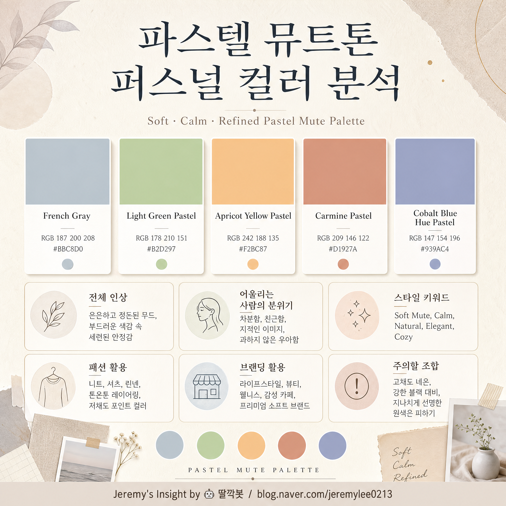

260502 퍼스널컬러 파스텔 팔레트 이미지 분석 보고서

핵심 결론
- 🎨 전체 팔레트는 차분하고 부드러운 파스텔 뮤트톤 인상임.
- 🌿 강한 카리스마보다 안정감, 배려, 섬세함, 조용한 감각이 먼저 느껴지는 사람 이미지임.
- 🧭 패션·브랜딩에서는 선명한 원색보다 저채도 포인트와 여백을 살릴 때 매력이 커짐.
팔레트 구성
| 컬러 | CMYK | RGB | 인상 |
|---|---|---|---|
| 프렌치 그레이 파스텔 | C32 M17 Y16 K0 | R187 G200 B208 | 차분함, 정돈감, 지적 분위기 |
| 그린 라이트 파스텔 | C36 M4 Y49 K0 | R178 G210 B151 | 자연스러움, 안정감, 회복감 |
| 애프리콧 옐로우 파스텔 | C4 M33 Y48 K0 | R242 G188 B135 | 따뜻함, 친근함, 부드러운 활력 |
| 카민 파스텔 | C18 M49 Y47 K2 | R209 G146 B122 | 은근한 감정선, 성숙함, 인간미 |
| 코발트 블루 휴 파스텔 | C47 M37 Y7 K0 | R147 G154 B196 | 차분한 개성, 사색적 분위기, 신뢰감 |
전체 이미지 분석
이 팔레트는 밝고 선명한 봄 웜톤이라기보다, 채도가 한 단계 낮아진 부드러운 파스텔 뮤트 계열에 가깝다.
색들이 모두 강하게 튀지 않고 서로 살짝 안개 낀 듯 연결된다. 그래서 첫인상은 화려함보다 편안함, 정돈감, 조용한 세련미에 가깝다.
특히 프렌치 그레이와 코발트 블루 휴가 팔레트의 중심을 잡고, 애프리콧·카민·라이트 그린이 인간적인 온도를 더한다.
어떤 사람처럼 보이는가
| 키워드 | 해석 |
|---|---|
| 섬세함 | 강하게 밀어붙이기보다 미묘한 분위기와 맥락을 잘 읽는 이미지 |
| 안정감 | 주변 사람을 편하게 만들고 과한 에너지를 주지 않는 타입 |
| 지적 차분함 | 감정적 과시보다 정돈된 생각과 취향이 먼저 보임 |
| 부드러운 개성 | 튀지는 않지만 오래 보면 취향이 분명한 사람 |
| 따뜻한 거리감 | 친절하지만 과하게 들이대지 않는 균형감 |
어울리는 스타일 방향
| 영역 | 추천 방향 |
|---|---|
| 패션 | 밝은 그레이, 세이지 그린, 더스티 블루, 살구빛 베이지, 로즈 브라운 |
| 소재 | 린넨, 코튼, 니트, 매트한 질감, 부드러운 울 |
| 패턴 | 잔잔한 체크, 작은 플라워, 흐린 스트라이프, 여백 많은 패턴 |
| 액세서리 | 실버, 샴페인 골드, 매트한 진주, 작은 포인트 장식 |
| 메이크업 | 코랄보다 살구·로즈베이지, 선명한 레드보다 말린 장미 계열 |
브랜딩과 콘텐츠 이미지
이 팔레트는 “강한 세일즈”보다 신뢰 기반의 조용한 설득에 잘 맞는다.
개인 브랜딩으로 쓰면 다음 이미지가 나온다.
- 차분한 전문가
- 감각 있는 기록자
- 과하지 않은 큐레이터
- 부드러운 분석가
- 안정적인 조언자
특히 지식관리, 심리, 라이프스타일, AI 활용기, 생산성, 블로그 브랜딩과 잘 맞는다.
반대의견과 비판적 관점
이 팔레트의 약점은 강한 존재감이 필요한 상황에서 다소 흐릿하게 보일 수 있다는 점이다.
| 약점 | 설명 |
|---|---|
| 임팩트 부족 | 원색 대비가 약해 첫눈에 강하게 각인되기 어려움 |
| 과한 부드러움 | 전체를 파스텔로만 쓰면 힘이 빠져 보일 수 있음 |
| 경계감 부족 | 전문성보다 감성 이미지가 먼저 보일 수 있음 |
| 계절감 제한 | 겨울형 고대비 이미지나 강한 럭셔리 이미지와는 거리가 있음 |
실패 시나리오
| 상황 | 결과 |
|---|---|
| 모든 요소를 파스텔로만 구성 | 흐릿하고 밋밋한 인상 가능 |
| 검정·원색과 강하게 섞음 | 팔레트 특유의 부드러운 균형이 깨짐 |
| 너무 귀여운 방향으로 사용 | 성숙한 차분함보다 유아적 이미지가 강해질 수 있음 |
| 브랜드 CTA에만 사용 | 행동 유도 버튼이 약하게 보여 전환력이 떨어질 수 있음 |
활용 원칙
- 베이스는 프렌치 그레이와 코발트 블루 휴로 잡는다.
- 라이트 그린은 안정감과 자연스러움 포인트로 쓴다.
- 애프리콧 옐로우는 따뜻한 접근성과 친근함에 쓴다.
- 카민 파스텔은 감정선과 인간미를 줄 때 소량 사용한다.
- 중요한 버튼이나 강조점에는 너무 흐리지 않게 명도·대비를 보완한다.
최종 판단
이 팔레트는 “나는 강하다”보다 “나는 편안하지만 취향이 분명하다”에 가까운 컬러다.
사람 이미지로 보면 조용하고 섬세하며, 차분한 관찰력과 부드러운 설득력을 가진 타입으로 읽힌다.
브랜딩으로 쓰면 과한 자극보다 신뢰, 정돈감, 감성적 안정감을 전달하는 데 강하다.
한 줄 결론: 이 퍼스널컬러 팔레트는 강렬한 주목형보다, 오래 볼수록 편안하고 감각적인 “차분한 큐레이터형” 이미지에 가깝다.
Jeremy's Insight by 🤖 딸깍봇 https://blog.naver.com/jeremylee0213